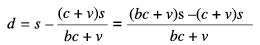

13
MARX’IN TARIMSAL RANT TEORİSİ

Marx’ın rant teorisi iki önemli ve birbiriyle yakından bağlantılı bileşeni kapsar: bir farklılık rantı teorisi ve bir mutlak rant teorisi. Marx, rant teorisini, tarım kesiminde özel toprak mülkiyetinin sermaye birikimi önünde potansiyel bir engel olarak etkili olduğu ve ekonomide üretilmiş artık değerin bir parçasını ele geçirdiği bir temel üzerinde tahlil eder. Sınırlı bir ölçüde aynı şey, ister neo-klasik ister Rikardocu olsun Ortodoks rant teorisi için de geçerlidir (bununla birlikte Ricardo’nun rant ile kârı birbirinden tahlilî olarak ayırt etmeye çalışmasına karşılık, neo-klasik teorinin, aşağıda gösterildiği gibi tam tersini yapması önemlidir). Ortodoks teoride üreticiler, özel mülkiyet ile doğal ya da teknik kısıtların bir birleşimi yüzünden rant öderler — ya genel arzda ya da niteliği veya yeri daha iyi olan toprak arzında görülen bir darlık gibi. Daha karmaşık açıklamalarda, farklı toprak ürünlerine olan talep de hesaba katılabilir. Her iki durumda rant, kısmen, kaynakları etkin bir şekilde farklı topraklar arasında dağıtma işini görerek tüketime hizmet eder.
Ortodoks görüşten iki ilginç özellik çıkar. Birincisi, başlı başına toprak mülkiyeti önemsizdir; rantın düzeyini değil, yalnızca onu kimin elde edeceğini belirler. İkincisi, rant düzeyini teknik üretim koşulları (ve talep) belirler. Ortodoks görüşün bu özelliklerini, Marx’ın yaklaşımıyla olan önemli farklarını vurgulamak için öne çıkarıyoruz. Marx için başlangıç noktası, artık değerin bir parçasının toprak sahipleri tarafından rant biçiminde mülk edinilmesinin koşullarıdır. Bu hâliyle rant teorisi, toprak mülkiyeti ile kapitalist üretim arasındaki ilişkinin belirtilmesine bağlıdır. Bunlar ise, ister istemez (teknik olarak verili değil) tarihî olarak özgül ve değişkendir. Dolayısıyla genel bir rant teorisi olamaz ve bir kertede ulaşılmış sonuçlar, otomatik olarak ötekilere uygulanamaz.
Bir başka deyişle, rant, yalnızca genel bir etki, örneğin kapitalist üretime köstek olma temelinde tahlil edilemez. Aksi hâlde “rant” kapitalist yatırımların önündeki her türlü engelin sonucu olurdu (Marshall’ın, sermayecilerin üstün bir üretim yönteminden geçici olarak yararlandıklarında kısa dönemde elde ettikleri rant benzerleri kavramının ana fikri budur). O durumda finans ya da piyasalara ayrıcalıklı erişim ve bir sürü başka koşulun rant teorisiyle eşit düzeyde ele alınması gerekir (neo-klasik “rant arayışı” teorisinde görüldüğü gibi), toprak mülkiyetinin toplumsal rolünün özgül bir teorisi kaybolurdu. Kısacası rant, hele kapitalizm, bir üretim tarzı olarak, biriktirme buyruğunun önüne çıkan engelleri silip süpürme eğilimi gösterirken, özgül tarihî koşullarla birlikte incelenmek zorundadır. Toprak mülkiyeti, sermaye birikimini neden ve nasıl sınırlayıp, sanayi sermayesinin emdiği artık değerden pay sızdırmayı başarır?
Bu kitabın, en çok gayret isteyen bölümü budur. Burada yer alışının iki sebebi vardır: Birincisi, Marx’ın yönteminin önemli bir uygulamasını örneklediği ve güya değer teorisiyle çelişen bir sorunun üstüne gittiği için; ve ikincisi, petrol, madencilik, tarımsal kalkınma ve kentsel dönüşüm gibi çok çeşitli sorunlar açısından rantın anlamlılığı devam ettiği için.
Farklılık Rantı 1
Marx’ın farklılık rantı (FR) teorisi, ancak, toprak mülkiyetinin tarımın içerisinde sermayenin işleyişine nasıl müdahale ettiği incelenerek anlaşılabilir. Nasıl olur da rekabet süreci, rant biçiminde mülk edinilecek artık değer bırakır ve bu durumun içermeleri nelerdir? Bu sorunun üstüne gitmek için, hafifçe konu dışına çıkıp, topraktan gelen önemli bir çarpıtıcı etki yokken, sermayelerin bir kesim içerisinde birbiriyle nasıl rekabet ettiğini incelememiz gerekiyor.
Aynı kesim içerisindeki sermayelerin, esas olarak, sermayenin organik bileşimi (SOB)ndeki artışlar yoluyla üretkenliği yükselterek birbiriyle rekabet ettiğini 6 ve 8. bölümlerde göstermiştik. Artışlar kesim çapında eşit bir şekilde oluşmadığından, bu sermayeler arasında önemli üretkenlik farkları olma eğilimi görülür. Marx, meta değerlerinin, bu farklı bireysel üretkenliklerin içinden çıkarak biçimlendiğini öne sürer. Önemli olan, değerlerin kesimin ortalama emek-zamanına eşit olması gerektiği konusunda ısrarlı olmayışıdır (işçilerin ekonomi çapında özdeş oldukları varsayılsa bile). Örneğin en elverişli ya da en az elverişli teknik ortalamaya kıyasla yeterince ağırlıklıysa o zaman kesimin piyasa değerini ortalama değil, söz konusu teknik düzenler. Her iki durumda aşırı ya da artık kârlar, üretkenlikleri kesim ortalamasından yüksek olan sermayelere gider.
Marx’ın FR1 açıklaması, bereket farklarından ötürü tarımda artık kârların var olmasıyla (taşıma ve öteki maliyetler yok sayıldığında) başlar. Bu, genellikle Ricardo’nun yaygın son birimiyle ilişkilendirilir. Kısacası sermaye, bereketleri eşit topraklara düzgünce akamaz; çünkü bunlar, kullanılabilir durumda olmayabilir. Daha iyi topraklara akan sermayeler, toprak mülkiyetinin engeliyle karşılaşıp toprak sahipleri tarafından, artık kârlarının bir kısmından rant biçiminde vazgeçmeye zorlanırlar. Sonuç, yalnızca rant yaratılması değil, aynı zamanda tarımda piyasa değerinin oluşmasının çarpıtılmasıdır. Sanayide en kötü üretim yöntemleri ancak istisnai olarak ağırlıklı oldukları zaman hâkim olur ve daha üretken yöntemler kullanan sermayeler artık kârlar ele geçirir. Oysa tarımda en kötü yöntemler toprak mülkiyetinin müdahalesi yüzünden hâkim olabilir ve daha iyi (marjinal olmayan) topraklara yatırılmış sermayeler, artık kârlarından FR1 biçiminde toprak sahipleri lehine vazgeçmek zorunda kalabilir. Ricardo’ya göre, toprak mülkiyetinin oynayabileceği bu roller, toprak sahibinin kim olduğuna bakmaksızın (bu, ona göre, salt bereketçe belirlenmiş rantları kimin elde edeceğini belirler) hüküm sürmek zorundadır. Oysa Marx’a göre rant, her zaman toprak mülkiyetinin fiilî varlığına ve farklı nitelikte topraklara bağlı farklılık artığını mülk edinme kapasitesine bağlıdır.
Bu yüzden tarım kesiminde kârlılık farklarının varoluşu, FR1’in var olması için gerekli ama yetersiz bir koşuldur. Bu artık kârların aynı zamanda sürekli olması ve yeterince güçlü emlak sahipleri tarafından mülk edinilmesi gerekir; aksi hâlde (Marshall’ın rant benzerlerinde olduğu gibi) FR, ekonominin her kesiminde var olmakla kalmaz; (sermaye hareketleri ve her bir kesim içerisinde teknolojik yeniliklerin yayılmasından ötürü rekabet yoluyla ortadan kalkma eğilimi gösteren) artık kârlar gibi aşınır da. Bununla birlikte şunu kaydetmek gerekir ki, başlı başına doğal koşulların farklı oluşu FR1’in kaynağı değildir. Bunlar üretkenlik farklarına katkıda bulunabilir; ama ne artık kâr ne farklılık rantı kategorilerini yaratırlar. Çünkü FR, kapitalist üretim ilişkileri altında doğal koşulların (ve üretkenlik farklarının) kullanılmasına olduğu kadar toprak mülkiyetinin müdahalesine de bağlıdır. Bir başka deyişle, rant, artık kârlar var olduğu için değil, bunlar sermayeci tarafından değil de emlak sahibi tarafından mülk edinildiği için var olur.
Farklılık Rantı 2
Marx’ın FR1 teorisi, eşit sermayelerin farklı topraklara uygulanması temeli üzerinde inşa edilmiştir. Bu durumda artık kârlar (ve rant), bu topraklar arasındaki az çok sürekli bereket farklarından doğar. İkinci tipte farklılık rantı (FR2) da tarım kesimi içerisindeki rekabetle ilgilidir. Ne var ki FR2, eşitsiz sermayelerin eşit topraklara uygulanmasından doğan geçici üretkenlik farklarının yarattığı artık kârların mülk edinilmesinden kaynaklanır. Bu durumda toprak sahipleri, toplumun, bireysel topraklarda teknik yeniliklere geçme ve büyük ölçekli üretimi örgütleme alanında ilerleme kaydetmesinden yararlanırlar; böylece o toprakların sahipleri ek artıktan bir payı kendilerine mal edebilirler. Tarımda birikim ilerleyip üretkenlik ve artığı yükselttikçe, toprak mülkiyetinin mülk edindiği artık payı da çoğalabilir.
Gene de FR2’nin potansiyel temelini oluşturan artık kârların tümünün toprak sahiplerine gitmeyebileceği açıktır. Bu artık kârlar, sermaye yatırımlarının normal dışı büyüklüğü kesim çapında normal hâle geldikçe aşınma eğilimi gösterir. Ne var ki FR2, kapitalist çiftçilerin yaygın (daha fazla toprakta aynı teknoloji) değil de, yoğun (aynı toprakta daha çok sermaye ve daha iyi teknoloji) yatırımlar yapma hevesini ister istemez azaltır; bu ise, tarımın teknolojik gelişmesini körletir. Bu nedenle Marx, tarımın, kapitalist gelişme biçimine mutlak olarak direnmeyebilirse de sanayiye göre yavaş bir ilerleme hızı sergileme eğilimi gösterdiğini öne sürer. Marx’ın FR2 teorisinden çıkarılacak belki en önemli sonuç budur: artık değerin rant biçiminde bölüşümünün statik olarak formüle edilişinden çok, sermaye birikiminin gelişmesinin önündeki engellerin dinamik olarak ele alınışı.
FR1 ile FR2 birbirinden bağımsız olsaydı FR1 ile FR2’yi basitçe toplar, FR tahlilini tamamlamış olurduk. O zaman FR1’in etkisi, toprakları eşitlemek olur, FR2 ise, eşitsiz sermayelerin kârlılığından hareketle hesaplanabilirdi. İkinci bir şık olarak FR2, farklı sermaye uygulamalarının etkilerini eşitler, FR1 ise, topraklar arasında farklılaşan bereketlerden hareketle hesaplanabilirdi. Ne var ki bu yordam geçersizdir. Aslında Marx, Kapital’in 3. cildinde FR2’yi salt biçimi içinde, yani eşit topraklara eşitsiz sermaye uygulamaları şeklinde asla incelemez. FR2’yi daima FR1’in –yani eşitsiz nitelikteki toprakların– yanında irdeler. Marx’ın böyle yapmasının sebebi, FR2’nin nicel belirlenişini, varoluşunun nitel temelini atmış olarak tahlil etmektir.
Bu bölümde gerek FR1 gerek FR2’yi sermayeler ile bereketlerin dağılımı konusundaki belirli soyutlamalar temelinde belirledik. Bunu, sergilemeye açıklık kazandırmak için yaptık; yoksa FR1 ile FR2’nin etkileşiminin yalnızca toplamsal olduğunu varsaymış değiliz. Eşitsiz topraklar ile bu topraklar üstünde eşitsiz sermayelerin bir arada varoluşu söz konusu olduğunda, daha karmaşık bir tahlilin işin içine girmesi zorunludur. FR1 için, eşitsiz sermaye uygulamalarının (FR2) varlığında, en kötü toprağı belirleme sorunu vardır. Örneğin bazı topraklar bir yatırım düzeyinde daha kötüyken öbürleri için olmayabilirler. FR2 için, topraklar farklıyken (FR1), normal yatırım düzeyini belirleme sorunu vardır. Bazı sermayeler bazı tiplerdeki topraklar için, başka sermayeler başka topraklar için normal olabilir. Ek yatırımların azalan üretkenliği, tarım ürününün piyasa değeri yükselmediği sürece, normal dışı büyüklükteki sermayelerin artık kârlar elde etmesine izin vermeyeceğine göre FR2 için ayrı bir güçlük söz konusudur. Bu şu soruyu davet eder: Piyasa değeri, bir toprak parselinin bireysel üretkenliğince mi belirlenmelidir, yoksa o toprağa yatırılmış sermayenin bir parçasınca belirlenebilir mi? Bir başka deyişle, “normal sermaye” büyüklüğü her zaman bir toprağa uygulanan toplam sermaye midir, yoksa o sermayenin bir parçası olabilir mi? Normal sermaye terimi bile isabetsiz olabilir; çünkü tikel bir toprakta sermaye yatırımı her zaman özgüldür, genel değil.
Bu sorunlar, tarımda en kötü toprak ile normal sermayenin eş anlı olarak belirlenmesiyle ilgilidir. İkisinin etkileşimi tarımsal ürünün piyasa değerini ortaya çıkarır; bundan hareketle de farklılık rantları hesaplanabilir. Bu sorun, sanayi sermayesi için ortaya çıkmaz; çünkü normal sermayenin belirlenmesi, değerin belirlenmesiyle eş anlamlıdır. Ötekinin yokluğunda FR1 ile FR2’nin her biri için aynı şeyin geçerli olduğunu yukarıda göstermiştik. Salt biçimiyle FR1 (eşit sermayeler) için, en kötü toprağın belirlenmesi değerin belirlenmesiyle eş anlamlıyken salt biçimiyle FR2 (eşit topraklar) için, değerin belirlenmesinde öne çıkan, normal sermayenin belirlenmesidir.
Bu sorun, yani normal sermaye ile en kötü toprağın (daha doğrusu, kullanılan toprakların fiziksel olarak en kötüsü değeri belirleyecek toprak olmayabileceğinden normal toprağın) birbiriyle bağlantılı olarak belirlenmesi, soyut olarak çözüme bağlanamaz; dolayısıyla FR1 ile FR2, salt teorik olarak belirlenemez. Daha önce tartışıldığı gibi bunlar, tarihî olarak olumsal koşullara, tarımın geçmişte nasıl gelişmiş olduğuna ve sermayecilerin toprağa erişimi (yasal, mali ve öteki koşullar burada etkili olabilir) açısından sermaye birikimiyle nasıl bir ilişki içinde olduğuna bağlıdır. Ayrıca almaşık ekimler ve üretim teknolojilerinde değişmeler toprak talebini ve en iyi ve en kötü toprak tanımlarını tadil eder. Kısacası FR teorisi, kesinleşmiş bir rant tahliline özgül olarak yol açmasa da, hangi süreçler aracılığıyla tarihî olarak incelenebileceğini açığa çıkarır.
Mutlak Rant
Farklılık rantının biçimlenmesinin anahtarı, tarım kesiminde değerin belirlenmesi ve artık kârların varlığıysa mutlak rant (MR)ın biçimlenmesinin temeli, piyasa değerlerinin üretim fiyatlarına çevrilmesidir (bk. 10. bölüm). Bu anlamda MR FR’den çıkar. Her iki rant biçimi, toprak mülkiyetinin sermaye yatırımının önüne koyduğu engel ve artık kârın rant biçiminde mülk edinilmesiyle ilgilidir. Ne var ki FR ile MR farklı tahlil düzeylerinde yer alır; o yüzden kaynakları da farklıdır. FR’nin tarım içerisindeki üretkenlik farklarından türemesine karşılık MR tarım ile ekonominin öteki kesimleri arasındaki üretkenlik farklarından türer.
Salt biçimsel açıdan Marx’ın MR teorisi şöyledir: Toprak mülkiyetince dayatılan ve FR2 tahlilinde açıklanmış engeller yüzünden tarımın SOB’si, sanayiden daha düşük olma eğilimi gösterir; o nedenle tarımda istihdam edilen canlı emek oranı daha yüksektir, bu kesim ek artık değer üretir ve rantın yokluğunda üretim fiyatı değerin altında olur.
Ne var ki bu tamamen statik bir açıklamadır. Dinamik açıdan, cebirsel ayrıntılarını aşağıda ele aldığımız üzere, üretim fiyatlarının biçimlenmesi, rekabete ve kesimler arasında sermaye akışı olanağına bağlıdır. Ne var ki tarıma olan akışlar ve bu kesimde üretim fiyatlarının biçimlenmesi toprak mülkiyetince engellenir. Bu engel yüzünden toprak sahipleri, yeni toprağa sermaye akışları için bir MR (ya da kullanımdaki mevcut topraklara akışlar için FR2) harcı alabilirler. Bu harç tarım ürünlerinin fiyatını üretim fiyatlarının üstüne çıkarır. Sınırda bu metalar değerleri üzerinden satılabilir; satış fiyatları ile üretim fiyatları arasındaki fark MR olarak ele geçirilir. Hâl böyle olunca, MR’nin yok olacağı koşullar şunlardır: (a) tarımın gelişme hızının sanayininkine eşit olması ve tarımın SOB’sinin toplumsal ortalamaya eşit (ya da ondan yüksek) olması ve (b) MR yeni topraklara doğru sermaye hareketlerine bağlı olduğuna göre, bütün toprakların işlenmiş olması.
Konuyla ilgili edebiyatta Marx’ın MR teorisinin bir başka yorumu, sık sık karşımıza çıkar. Buna göre toprak sahipleri, tarıma sermaye akışını önleyebildikleri için rant elde ederler. Ne var ki bu, bir tekel rantı olarak MR’den başka bir şey değildir. Benzer mülahazalar toprak mülkiyetinin yokluğunda da geçerlidir — örneğin üretim sürecinde bir asıl patent söz konusuysa. Bu yaklaşım iki sebepten ötürü yetersizdir. Birinci olarak, bu teorinin statik bir artık değer bölüşümü teorisi olma olasılığı yüksek olduğu için. İkinci olarak, bu yorumda, MR’nin var olması için Marx’ın koyduğu koşullar salt keyfî hâle gelir. Bu, MR’nin tarımda düşük SOB’ye bağlı olması için geçerlidir — özellikle SOB’lerin sanayi kesimleri arasında, rant oluşmaksızın farklılaştığı göz önünde tutulursa. Üstelik tarımda bile, MR’nin değer ile üretim fiyatı arasındaki farkla sınırlı olması için sebep olmazdı. MR bir tekel rantı olsaydı tarım ürünlerinin piyasa fiyatı, toprak sahiplerinin yüksek fiyatlar dayatma güç ve istekliliklerinin elverdiği ölçüde değerlerinin üstüne çıkabilirdi.
Ne var ki Marx’ın, MR’nin hangi koşullarda ortadan kalkacağı konusundaki irdelemesi, statik bir teorinin söz konusu olmadığını telkin eder. Önemli olan, yukarıda açıklandığı gibi sanayiye göre tarımın gelişme hızı ve yeni topraklara doğru sermaye hareketidir. Elbette bu koşullar statik olarak yorumlanabilir (örneğin bütün toprakların kiralandığı ve bütün kesimlerin gelişme düzeylerinin eşit olduğu varsayılırsa); ama onun dışında, kullanılan öteki kavramları, özellikle SOB’yi Marx’ın birikim teorisinin dinamiği içinde yorumlamak gerekir. Bu görevi yerine getirirken, Marx’ın MR teorisinin sermaye tahliliyle tamamen tutarlı olduğunu aşağıda göstereceğiz.
Tutalım ki başlangıçta SOB, c/v olarak verilmiştir ve herhangi bir kesimde (tarım dâhil) bir b > 1 çarpanı kadar artırılabilmektedir. O zaman verili bir emek miktarı, c yerine bc kadar değişmez sermayeyi nihai mallara çevirir. Tarım için, kâr oranı k iken değer ile üretim fiyatı arasındaki fark (d) şudur:
d = [c + v + m] – [(c + v) (1 + k)] = m – (c + v)k
Teknik değişmeyle birlikte kâr oranı k = m/(c + v)’den m/(bc + v)’ye dönüşür. O nedenle değer ile üretim fiyatı arasındaki fark:

d = (b – 1)ck
hâline gelir. Bu fark, kâr oranının, harekete geçirilen ek değişmez sermayeyle çarpımına ya da ikinci bir şık olarak, daha yüksek SOB’nin ortaya çıkardığı artık kârlara eşittir. SOB hâlen kullanılmakta olan topraklar üstünde artsaydı bu artık kârlar FR2 şeklinde ele geçirilirdi. Sözün kısası, MR, yeni topraklarda yaygın tarımdan alınabilecek ve yoğun tarıma rakip yatırımlar yapılması olanağının izin verdiği en yüksek harçla sınırlıdır. Bu, tarımda değer ile üretim fiyatı arasındaki farka tekabül eder.
Yukarıda göstermiş bulunuyoruz ki Marx’ın rant teorisi, sermaye teorisinin, toprak mülkiyeti engeliyle karşılaşan birikime tutarlı bir şekilde yaygınlaştırılmasıdır. Ona göre rant tarımdaki sınıf ilişkilerinin iktisadi biçimidir ve ancak, sermaye ile toprak arasındaki ilişki incelenerek anlaşılabilir. Rant, artık değerin toprak mülkiyetinin müdahalesi aracılığıyla üretilip mülk edinilmesine bağlıdır. Farklılık rantı, tarım kesimi içerisindeki rekabet aracılığıyla oluşan artık kârların varoluşuna bağlıdır. FR1, “doğal” koşullardan kaynaklanan üretkenlik farklarının sonucu olup, eşit sermayelerin tarımda farklı kâr oranları elde etmesine yol açar. FR2 tarımda eşitsiz sermaye uygulamalarının (farklı büyüklüklerde sermayeler) farklı getirilerinin sonucudur. Sanayide artık kârlar en üretken sermayeye gider. Oysa tarımda bunlar, rant olarak mülk edinilebilir. Nihayet MR, tarımda değer ile üretim fiyatı arasındaki farktan, tarımın SOB’sinin ortalamadan düşük olması nedeniyle çıkar.
Marx’ın rant teorisi, üretim, birikim, değerin biçimlenmesi teorilerine ve üretim fiyatları teorisine dayanır. Bu hâliyle kapitalist ekonomi konusundaki anlayışının muhtemelen en karmaşık uygulamasıdır. Aynı zamanda, daha ileri bir tahlilin tam da, toprak mülkiyetinin nasıl gelişmiş olduğuna ve kapitalist gelişmeyle nasıl etkileştiğine bağlı olduğunu göstererek kendi sınırlarını bütün açıklığıyla ortaya koyar.
Tartışma Konuları ve Tamamlayıcı Okuma Önerileri
Marx’ın rant (daha doğrusu toprak mülkiyeti) teorisinde en tartışmalı noktalar, farklılık rantı teorisinde Ricardo’dan ayrılıp ayrılmadığı, ayrılıyorsa ne bakımdan ayrıldığı, mutlak rantın tekel rantı olup olmadığı ve tarımda daha düşük SOB’nin keyfî olup olmadığıdır (MR’nin değer ile fiyat arasındaki farkla sınırlı oluşuyla birlikte). Ne var ki Marx’ın teorisinin önemi, kesinleşmiş bir rant ve fiyat teorisi sağlamaktan çok, toprak mülkiyetinin hangi tarihî olarak özgül yollardan sermaye birikiminin hızını, ritmini ve doğrultusunu etkilediğine dikkat çekmesinde yatar — ister tarım, petrol ister kentsel dönüşüm bağlamında olsun.
Marx’ın rant teorisi, özellikle Karl Marx (1998, 1999a, Böl. 1-14 ve 2006b, 6. kısım) içinde geliştirilir. Bu bölüm Ben Fine (1982, Böl. 4, 7, 1986 ve 1990b)’a dayanır. Benzer yaklaşımlar için, bk. Cyrus Bina (1989), David Harvey (1999, Böl. 11) ve Isaak I. Rubin (1979, Böl. 29).